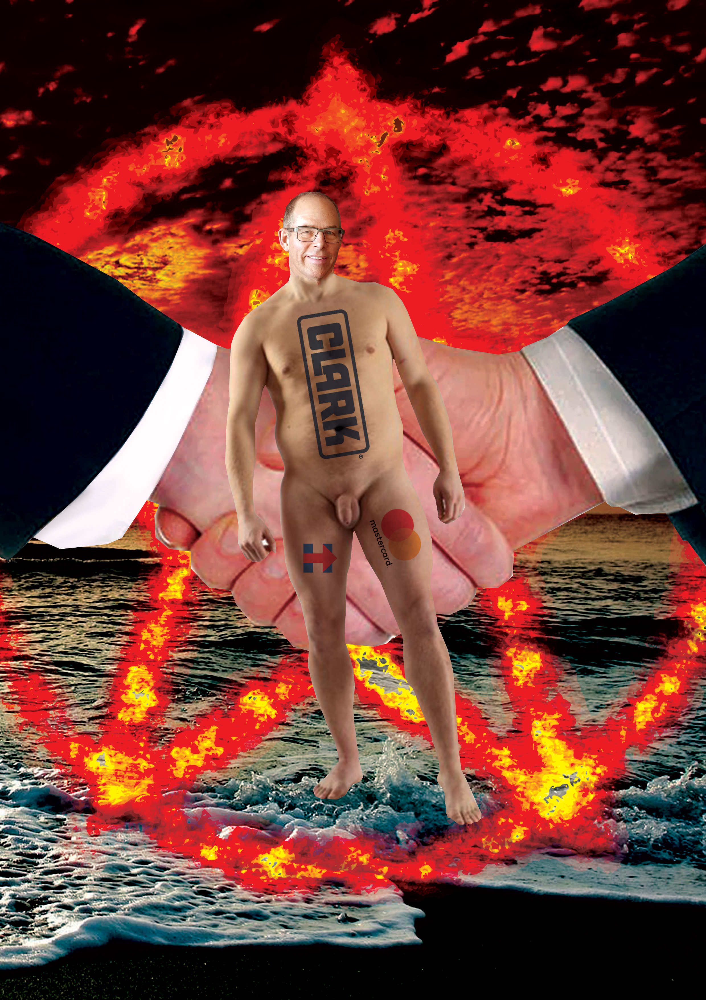
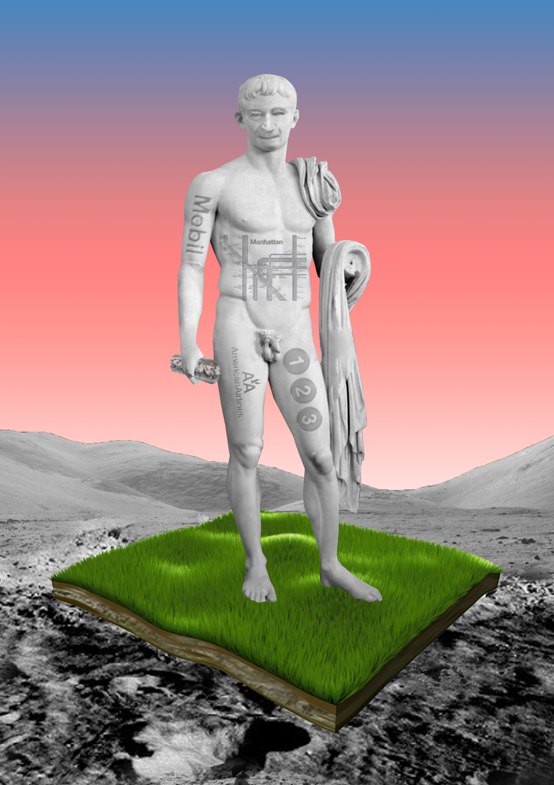
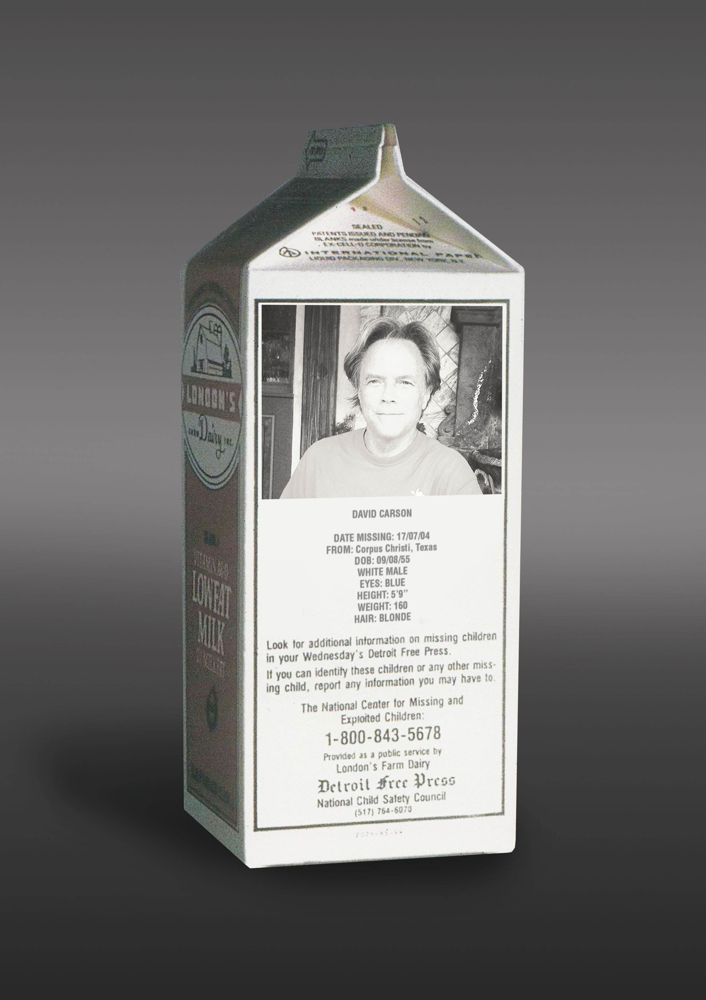
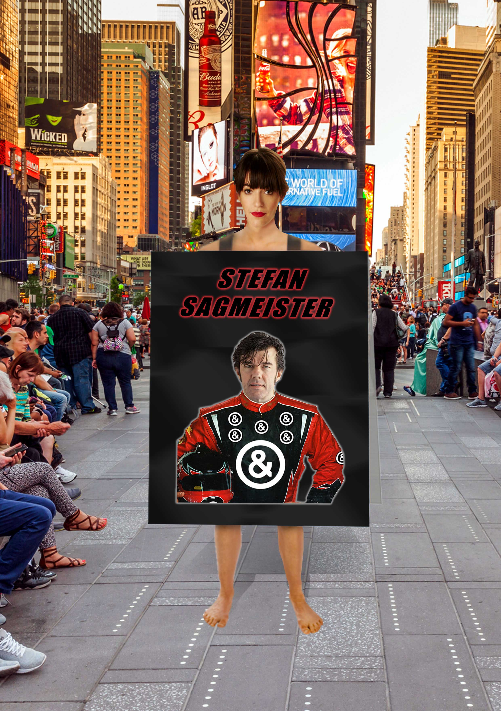

Actualizing implicit jokes within the global design community, these images use humor to create hypothetical situations that invoke design's potential to not only be a profession but to also create a specific cultural identity dominated by ego.
Angus Plunkett
Designers Exposed
1 / 7 Paula Scher

2 / 7 Michael Beirut
Actualizing implicit jokes within the global design community, these images use humor to create hypothetical situations that invoke design's potential to not only be a profession but to also create a specific cultural identity dominated by ego.

3 / 7 Massimo Vignelli
Actualizing implicit jokes within the global design community, these images use humor to create hypothetical situations that invoke design's potential to not only be a profession but to also create a specific cultural identity dominated by ego.

4 / 7 Stefan Sagmeister
Actualizing implicit jokes within the global design community, these images use humor to create hypothetical situations that invoke design's potential to not only be a profession but to also create a specific cultural identity dominated by ego.

5 / 7 David Carson
Actualizing implicit jokes within the global design community, these images use humor to create hypothetical situations that invoke design's potential to not only be a profession but to also create a specific cultural identity dominated by ego.

6 / 7 Jessica Walsh
Actualizing implicit jokes within the global design community, these images use humor to create hypothetical situations that invoke design's potential to not only be a profession but to also create a specific cultural identity dominated by ego.
7 / 7 Milton Glaser
Actualizing implicit jokes within the global design community, these images use humor to create hypothetical situations that invoke design's potential to not only be a profession but to also create a specific cultural identity dominated by ego.